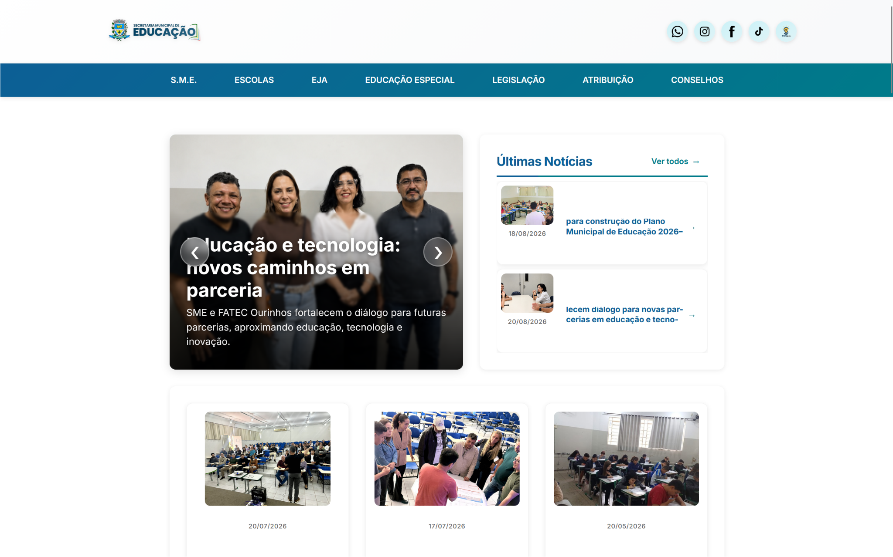

Meus últimos projetos



Graduado em Segurança da Informação pela Faculdade de Tecnologia de Ourinhos (FATEC-OU) e cursando Análise e Desenvolvimento de Sistemas. Possuo sólida experiência com ecossistema JavaScript/Node.js, bancos relacionais (MySQL) e integração de templates/APIs, consolidada em projetos como o SiguEscola (gestão escolar municipal). Sempre focado em boas práticas, performance e aprendizado contínuo.
Primeiro contato formal com desenvolvimento de software, abordando lógica de programação, fundamentos de web (HTML, CSS e JavaScript), banco de dados e infraestrutura.
Experiência de imersão focada em fluência em espanhol, adaptabilidade multicultural, autonomia e resolução de problemas em ambientes dinâmicos.
Formação sólida em segurança cibernética, infraestrutura de redes, proteção de dados, análise de vulnerabilidades e desenvolvimento de software seguro.
Desenvolvimento e sustentação da plataforma SiguEscola utilizando Node.js, EJS, MySQL e Git para modernização da gestão educacional municipal.
Atuação em hospitalidade corporativa nos Estados Unidos, com prática diária de comunicação em inglês e rotina internacional. Sólida experiência em atendimento de alto padrão, resolução ágil de problemas e integração em ambientes multiculturais.
Foco no desenvolvimento de software full stack, engenharia de software, inteligência computacional e arquitetura de sistemas modernos.

Email:
WhatsApp: